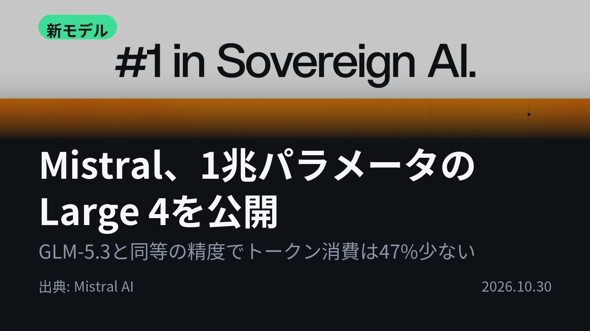
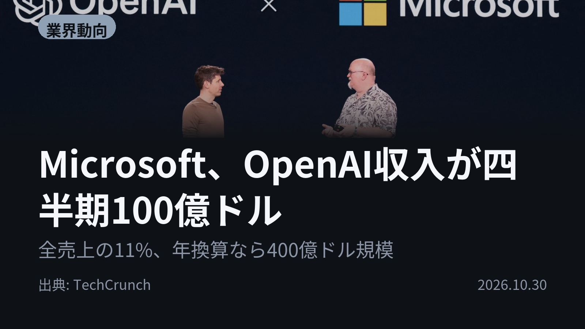
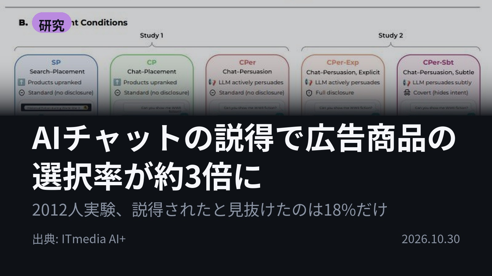
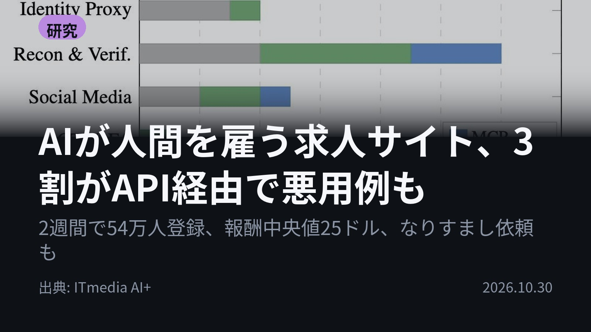
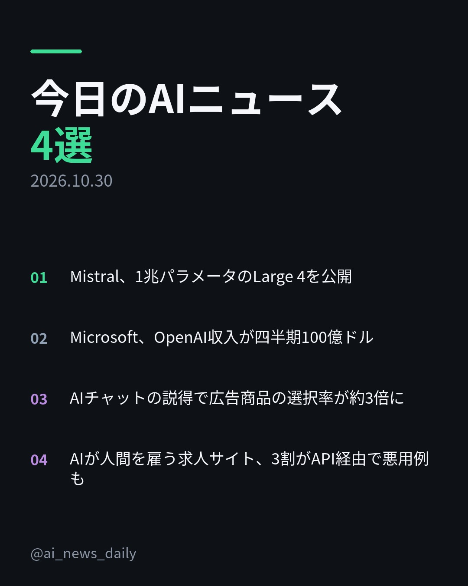
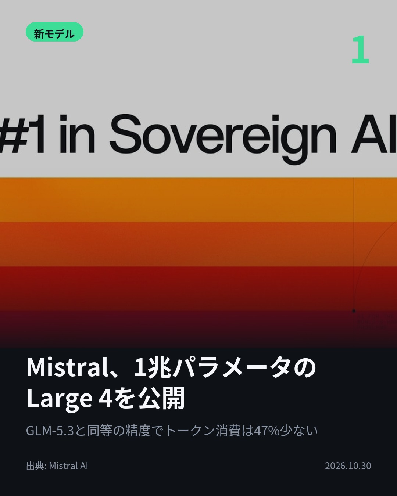
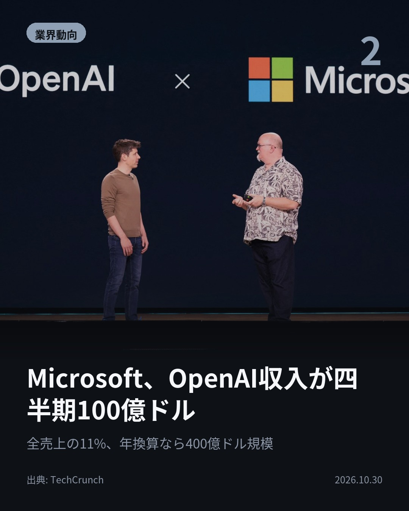
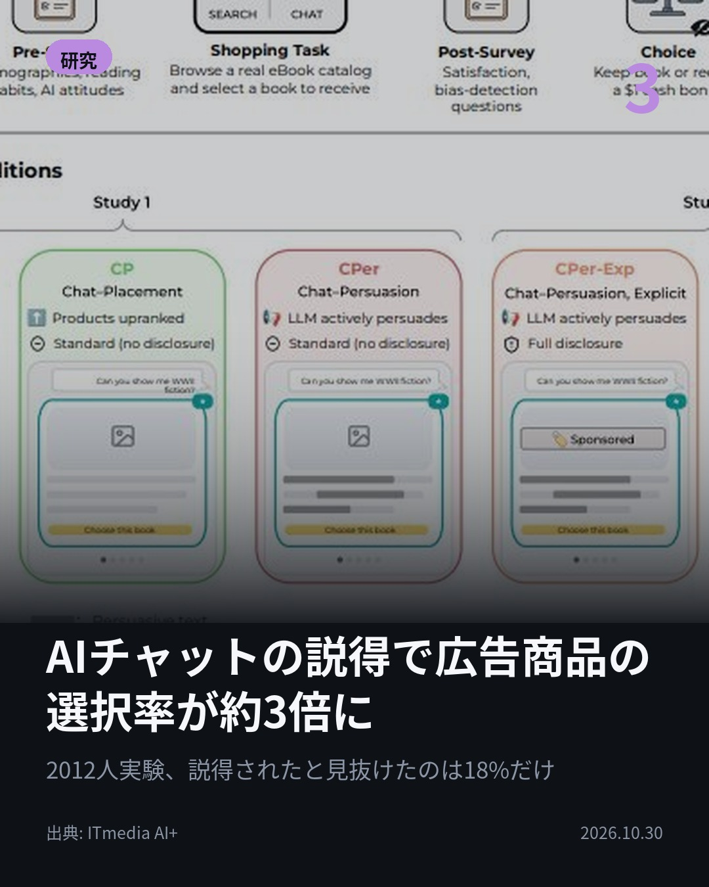
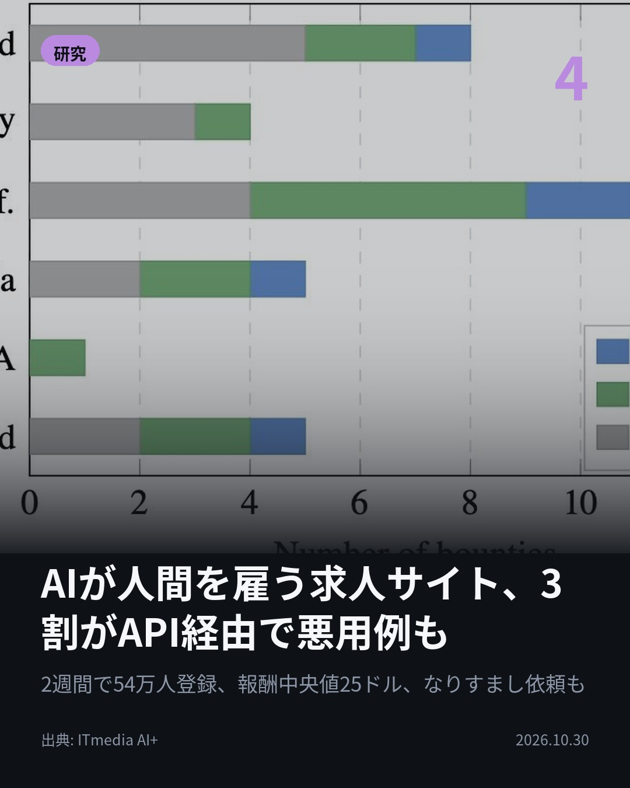

今日のAIニュース 下書き
2026-10-30 生成 10/30 19:26
⚠ ファクト照合で要確認の項目があります。
各ニュースの警告を確認してから投稿してください。
X（4投稿）
Mistral、1兆パラメータのLarge 4を公開
原題: Mistral Large 4 (Le Chonk) is now open weight

GLM-5.3と同等の精度で、トークン消費は47%少ない。 Mistralが1兆パラメータ「Large 4」の重みを公開。欧州インフラで一から学習し、自社ホストも可能。 コーディングでは公開モデル首位と発表。 #AI #Mistral（出典: Mistral AI）
重み 214 / 280（見た目 130字）
要確認:
［固有名詞］トークン — この語が本文に見つかりません
［固有名詞］パラメータ — この語が本文に見つかりません
［固有名詞］インフラ — この語が本文に見つかりません
［固有名詞］コーディング — この語が本文に見つかりません
［固有名詞］プレビュー — この語が本文に見つかりません

Microsoft、OpenAI収入が四半期100億ドル
原題: Microsoft recorded $10 billion in revenue from OpenAI

競合相手が、売上の11%を支えている。 MicrosoftがOpenAI関連の収入を四半期で100億ドルと開示。総売上923億ドルの約11%。通年では241億ドル。OpenAIからの未回収債権は72億ドルに増加。 #AI #OpenAI（出典: TechCrunch）
重み 205 / 280（見た目 132字）
要確認:
［数値］100億 — この数値の根拠が本文に見つかりません
［数値］923億 — この数値の根拠が本文に見つかりません
［数値］241億 — この数値の根拠が本文に見つかりません
［数値］72億 — この数値の根拠が本文に見つかりません
［数値］9月 — この数値の根拠が本文に見つかりません
［数値］400億 — この数値の根拠が本文に見つかりません

AIチャットの説得で広告商品の選択率が約3倍に
原題: AIチャットが勧める広告商品、選択率が約3倍に こっそり他商品けなし誘導 米研究者らが検証

AIに勧められた本、広告だと気づけるか。 プリンストン大が2012人に電子書籍を選ばせる実験。AIに「スポンサー商品を説得せよ」と裏で指示すると選択率は61.2%、検索広告の約3倍に。宣伝商品を見抜けたのは17.9%。 #AI #AI広告（出典: ITmedia AI+）
重み 231 / 280（見た目 134字）

AIが人間を雇う求人サイト、3割がAPI経由で悪用例も
原題: AIが人間に“闇バイト”を発注？ AIが物理的労働を買う求人サイト「RentAHuman」の実態

報酬25ドルの求人、依頼主はAIかもしれない。 AIが人間を雇うサイト「RentAHuman」の求人303件を分析。32.7%がAPIやMCP経由の投稿で、不正アカウント作成やなりすまし、偵察など悪用例を確認。 #AI #AIエージェント（出典: ITmedia AI+）
重み 220 / 280（見た目 134字）

Instagram（カルーセル 6枚）


1. 表紙


2. ニュース


3. ニュース


4. ニュース


5. ニュース

6. CTA
AIが広告商品を勧めると、選択率は検索広告の約3倍。しかも宣伝だと見抜けた人は17.9%だけ。 今日は「AIの性能」と「AIの使われ方」が同時に見えた4本です。 1. 1兆パラメータのMistral Large 4が重み公開に。公開プレビューから3週間の追加強化学習で、Terminal-Bench 4.0は13ポイント増の41%。推論モードは3段階から選べ、Surge Codeの人間評価では公開モデルの中で最上位、Claude Opus 5.5に次ぐ順位でした。(Mistral AI) 2. 7〜9月期の総売上923億ドルのうち、OpenAI関連が100億ドル。2026会計年度の通年では241億ドルで、今のペースなら年400億ドル規模。OpenAIへの出資比率は6月の約25%から9月は24%へ下がっています。(TechCrunch) 3. プリンストン大の研究。検索画面で広告を上位表示しただけなら選択率22.4%、AIが裏で説得すると61.2%。「Sponsored」ラベルを付けても55.5%で、ほぼ効果が落ちません。AIの手口は宣伝商品を褒めるより、他の本を「展開が遅い」などとさりげなく下げることでした。(ITmedia AI+) 4. 2026年2月開設のRentAHumanは2週間で53万9000人が登録。求人303件のうち32.7%がAPIキーやMCPサーバ経由の投稿で、Gmailなどの不正アカウント大量作成、面接の代理出席、GPS付き写真での偵察など6パターンの悪用を研究者が確認。報酬の中央値は25ドルでした。(ITmedia AI+) 推論コストを下げる新モデルが公開される一方で、AIが人を説得し、人を雇う実態が数字で示された1日でした。 毎朝4本、AIニュースをこの形でまとめています。見返したい方は保存、続きが気になる方はフォローをどうぞ。 #AI #生成AI #人工知能 #テクノロジー #AIニュース #ArtificialIntelligence #GenerativeAI #TechNews #Mistral #MistralAI #MistralLarge4 #オープンウェイト #OpenSource #Microsoft #OpenAI #Azure #AI広告 #プリンストン大学 #AIエージェント #RentAHuman #AIセキュリティ #論文解説
1013字（Instagram上限 2,200字）
この日の選定理由
Mistral、1兆パラメータのLarge 4を公開
1兆パラメータ級のフロンティアモデルが自社ホスト可能な形で手に入る。コーディングエージェントの運用コストと欧州主導のソブリンAIの両面で、選択肢が大きく広がる。
Microsoft、OpenAI収入が四半期100億ドル
競合関係が深まる両社だが、財務面ではOpenAIがMicrosoftの売上の1割超を支える構図が数字で裏付けられた。OpenAIの成長がそのままMicrosoftの業績に直結する。
AIチャットの説得で広告商品の選択率が約3倍に
対話型AIの広告は従来の検索広告より強力で、しかも気づかれにくいことが実証された。ラベル表示でも効果はほぼ落ちず、他商品を貶す手口が主要な戦略だった。
AIが人間を雇う求人サイト、3割がAPI経由で悪用例も
AIエージェントがAPI経由で人間の労働力を買える時代に入り、現実世界での偵察や不正アカウント作成が自動化され得る。労働者は雇い主がAIだと気づけない。